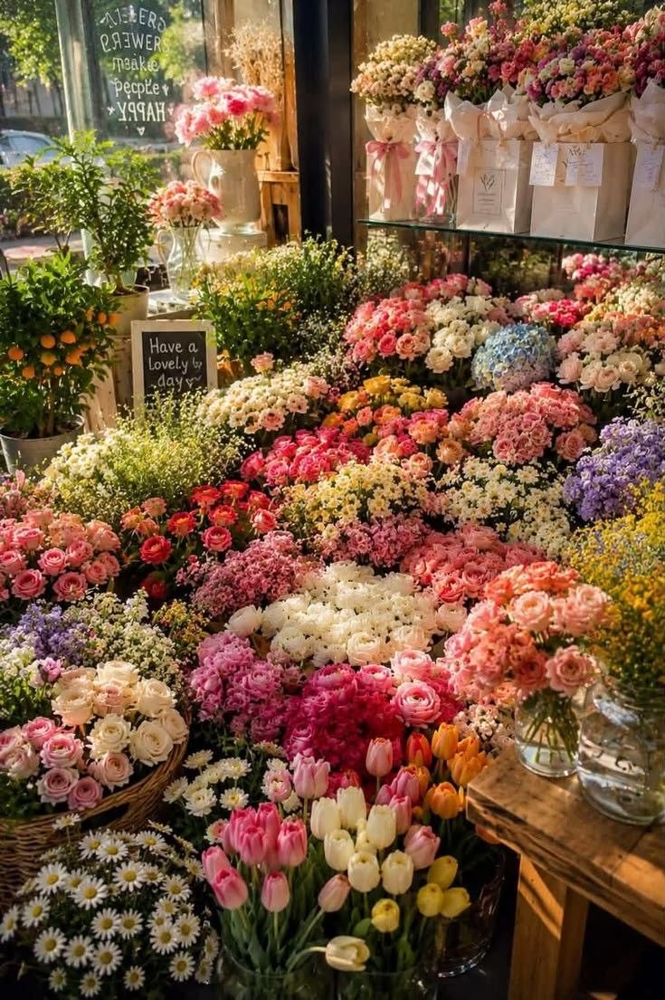

BOTANICAL ATELIER • АВТОРСКАЯ ФЛОРИСТИКА
Живая поэзия
Живая поэзия
в каждом лепестке
Создаем сложные фактурные букеты из редких садовых цветов, вдохновленные дикой природой и тихой красотой старых оранжерей.

«Мы собираем не просто цветы, а настроение тихого утра у лесного пруда».